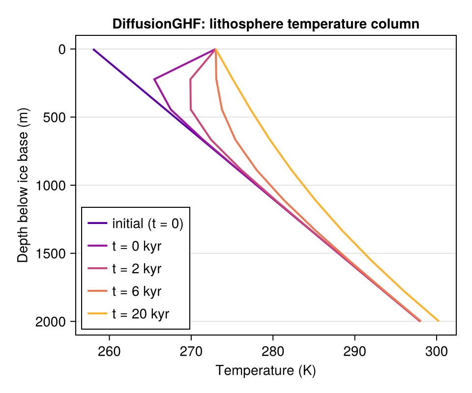
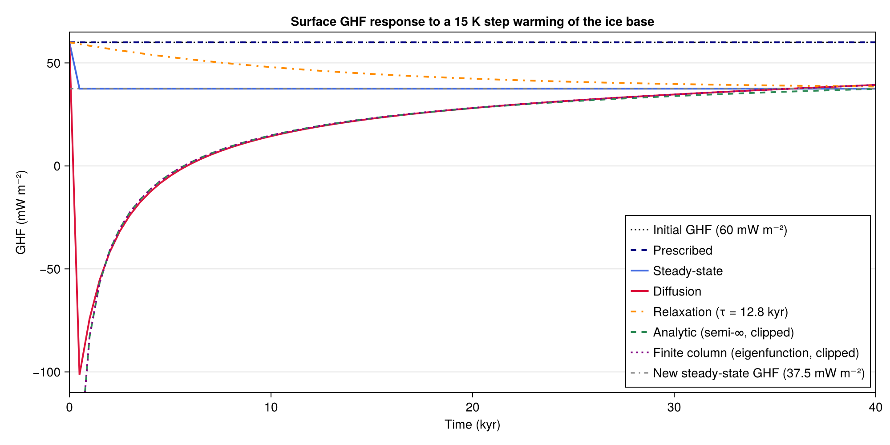

GHF Models
Geothermal heat flux (GHF) at the ice base is not static: it responds to changes in basal ice temperature through the thermal inertia of the lithosphere. Tartaros.jl provides several models that capture different levels of this physics, all as subtypes of AbstractGHF advanced via ghf!.
Scenario
We simulate a step-warming event: the ice base is initially cold (258 K) and warms abruptly to the pressure melting point (273 K) at t = 0, then stays there. This mimics the onset of basal melting, e.g. at the transition from a cold-based to a warm-based glacier. We track how each model's GHF responds over 40,000 years — a span comparable to one glacial cycle and roughly two thermal relaxation timescales of the lithosphere column.
using Tartaros
using CairoMakie
# Physical parameters — typical continental crust
k = 3.0 # thermal conductivity [W m⁻¹ K⁻¹]
kappa = 1e-6 # thermal diffusivity [m² s⁻¹]
H = 2_000.0 # lithosphere thickness [m]
nz = 10; # vertical levels in the diffusion columnUsing a GHF model
All GHF models share the same interface: construct the model once, then advance it with ghf! at each time step. For DiffusionGHF, which explicitly integrates the 1-D lithospheric heat equation, the call signature is:
ghf!(ghf_field, T_ice_base, model, dt)ghf_field and T_ice_base are arrays over the horizontal model grid; model carries the full 3-D column state and is updated in place alongside ghf_field. This maps directly onto an ice-sheet coupling loop where T_ice_base is provided by the ice dynamics solver at each time step.
Below we build a single-column DiffusionGHF, subject it to an abrupt 15 K warming of the ice base, and observe how the lithospheric temperature profile responds.
# Construct DiffusionGHF — T_mantle is inferred from ghf_ref and the initial T_ice_base
ghf0 = fill(0.060, 1, 1) # reference GHF [W m⁻²]
T_b0 = fill(258.0, 1, 1) # initial basal temperature [K]
T_b1 = fill(273.0, 1, 1) # post-warming temperature [K]
dif = DiffusionGHF(ghf0, T_b0; k, kappa, H_litho = H, nz)
# Integrate 40 × 500 yr = 20 kyr; record the column at selected snapshots
snap_yr = [0, 500, 2_000, 6_000, 20_000]
dt_snap = 500 * 365.25 * 24 * 3600 # 500-yr time step [s]
T_snap = zeros(nz, length(snap_yr))
T_snap[:, 1] .= dif.T_col[1, 1, :] # t = 0 profile
gbuf = zeros(1, 1)
for step in 1:40
ghf!(gbuf, T_b1, dif, dt_snap)
si = findfirst(==(step * 500), snap_yr)
si !== nothing && (T_snap[:, si] .= dif.T_col[1, 1, :])
end
depth_snap = H .* (1 .- dif.zeta)
# Visualise how the thermal signal diffuses downward through the lithosphere
fig_usage = Figure(size = (480, 400))
ax_usage = Axis(fig_usage[1, 1];
xlabel = "Temperature (K)",
ylabel = "Depth below ice base (m)",
title = "DiffusionGHF: lithosphere temperature column",
yreversed = true,
xgridvisible = false)
snap_cls = cgrad(:plasma, length(snap_yr) + 2; categorical = true)
for (i, yr) in enumerate(snap_yr)
label = yr == 0 ? "initial (t = 0)" : "t = $(yr ÷ 1000) kyr"
lines!(ax_usage, T_snap[:, i], depth_snap;
color = snap_cls[i + 1], linewidth = 2, label = label)
end
axislegend(ax_usage; position = :lb, framevisible = true)
fig_usage
The thermal relaxation timescale of the column is approximately $\tau \approx H^2 / (\pi^2 \kappa) \approx 12{,}700$ years for these parameters.
Comparison with other GHF models
DiffusionGHF is the most physically complete model of the six currently implemented in Tartaros.jl. Its computational costs is relatively low, especially since it is GPU-compatible. However, other models may be preferred in some contexts, e.g. for their analytical tractability, to save computational resources or to isolate specific feedbacks. Below we compare the GHF time series of all six models in response to the same step warming. The table summarises the key physics and long-term targets of each model.
| Model | Physics | Long-term target |
|---|---|---|
PrescribedGHF | No feedback | 60 mW m⁻² (unchanged) |
SteadyStateGHF | Instantaneous Fourier | 37.5 mW m⁻² (new steady state) |
ThermalRelaxationGHF | Exponential lag | 37.5 mW m⁻² |
InfiniteColumnGHF | Semi-infinite (1/√t return) | 60 mW m⁻² (algebraic) |
FiniteColumnGHF | Eigenfunction expansion | 60 mW m⁻² (exponential) |
DiffusionGHF | Full 1-D diffusion | 60 mW m⁻² (numerical) |
The three analytical models (InfiniteColumnGHF, FiniteColumnGHF) and DiffusionGHF all use a fixed Neumann condition at the base (prescribed mantle flux), so their long-term limit is the original $G_\text{ref} = 60$ mW m⁻². The key difference is the return timescale: the semi-infinite formula decays algebraically as $1/\sqrt{t}$ whereas the eigenfunction expansion and numerical diffusion model relax exponentially once the thermal signal has propagated through the full column depth.
SteadyStateGHF and ThermalRelaxationGHF instead hold $T_\text{mantle}$ fixed (effectively a Dirichlet bottom BC), so they converge to the new steady-state flux 37.5 mW m⁻².
Values below −110 mW m⁻² at early times are clipped in the figure.
# Boundary conditions
T_cold = fill(258.0, 1, 1) # initial ice-base temperature [K]
T_warm = fill(273.0, 1, 1) # post-warming ice-base temperature [K]
ghf_ref = fill(0.060, 1, 1) # deep-mantle reference GHF [W m⁻²]
# Build models — SteadyStateGHF and DiffusionGHF each infer their initial
# lithospheric state from ghf_ref and T_cold, so all models begin at 60 mW m⁻².
model_psc = PrescribedGHF(ghf_ref)
model_ss = SteadyStateGHF(ghf_ref, T_cold; k, H_litho = H)
model_dif = DiffusionGHF(ghf_ref, T_cold; k, kappa, H_litho = H, nz)
# ThermalRelaxationGHF: target = new steady-state GHF after warming; τ = H²/(π²κ)
tau_s = H^2 / (pi^2 * kappa) # [s]
ghf_target = fill(k * (model_ss.T_mantle[1, 1] - T_warm[1]) / H, 1, 1) # [W m⁻²]
model_relax = ThermalRelaxationGHF(ghf_target, ghf_ref; tau = tau_s)
# InfiniteColumnGHF: semi-infinite solution; clock starts at 0 (the moment of the step)
dT_step = T_warm .- T_cold # 15 K step
model_analytic = InfiniteColumnGHF(ghf_ref, dT_step; k, kappa, H_litho = H)
# FiniteColumnGHF: eigenfunction expansion; same step and clock
model_finite = FiniteColumnGHF(ghf_ref, dT_step; k, kappa, H_litho = H)
# Time axis: 30,000 years at 500-year steps
dt_yr = 500
dt_s = dt_yr * 365.25 * 24 * 3600 # seconds per step
nstep = 80
t_kyr = range(0.0, 40.0; length = nstep + 1)
# Allocate result arrays — index 1 is the initial state (t = 0)
ghf_psc = zeros(nstep + 1)
ghf_ss = zeros(nstep + 1)
ghf_dif = zeros(nstep + 1)
ghf_relax = zeros(nstep + 1)
ghf_analytic = zeros(nstep + 1)
ghf_finite = zeros(nstep + 1)
ghf_psc[1] = ghf_ref[1] * 1e3 # mW m⁻²
ghf_ss[1] = ghf_ref[1] * 1e3
ghf_dif[1] = ghf_ref[1] * 1e3
ghf_relax[1] = ghf_ref[1] * 1e3
ghf_analytic[1] = ghf_ref[1] * 1e3
ghf_finite[1] = ghf_ref[1] * 1e3
# Temperature-profile snapshots for the diffusion model at selected times
snapshot_yr = [0, 3_000, 6_000, 12_000, 30_000]
T_profiles = zeros(nz, length(snapshot_yr))
T_profiles[:, 1] .= model_dif.T_col[1, 1, :] # initial (t = 0) profile
# Time loop: apply T_warm from step 1 onward
buf = zeros(1, 1)
for step in 1:nstep
ghf!(buf, T_warm, model_psc)
ghf_psc[step + 1] = buf[1] * 1e3
ghf!(buf, T_warm, model_ss)
ghf_ss[step + 1] = buf[1] * 1e3
ghf!(buf, T_warm, model_dif, dt_s)
ghf_dif[step + 1] = buf[1] * 1e3
ghf!(buf, T_warm, model_relax, dt_s)
ghf_relax[step + 1] = buf[1] * 1e3
ghf!(buf, T_warm, model_analytic, dt_s)
ghf_analytic[step + 1] = buf[1] * 1e3
ghf!(buf, T_warm, model_finite, dt_s)
ghf_finite[step + 1] = buf[1] * 1e3
si = findfirst(==(step * dt_yr), snapshot_yr)
if si !== nothing
T_profiles[:, si] .= model_dif.T_col[1, 1, :]
end
end
# Analytical final steady state — the asymptotic target for the diffusion and relaxation models
tau_kyr = round(tau_s / (365.25 * 24 * 3600 * 1_000); digits = 1)
T_mantle = model_ss.T_mantle[1, 1]
ghf_ss_final = k * (T_mantle - T_warm[1]) / H
T_final_ss = @. T_warm[1] + ghf_ss_final * H * (1 - model_dif.zeta) / k
depth = H .* (1 .- model_dif.zeta) # sigma → depth below ice base [m]
# ── Figure of GHF time series ────────────────────────────────────────
fig = Figure(size = (1000, 500))
# Panel 1
ax1 = Axis(fig[1, 1];
xlabel = "Time (kyr)",
ylabel = "GHF (mW m⁻²)",
title = "Surface GHF response to a 15 K step warming of the ice base",
xgridvisible = false)
hlines!(ax1, [ghf_ref[1] * 1e3];
color = :black, linestyle = :dot, linewidth = 1.5, label = "Initial GHF (60 mW m⁻²)")
lines!(ax1, t_kyr, ghf_psc;
color = :navyblue, linewidth = 2, linestyle = :dash, label = "Prescribed")
lines!(ax1, t_kyr, ghf_ss;
color = :royalblue, linewidth = 2, label = "Steady-state")
lines!(ax1, t_kyr, ghf_dif;
color = :crimson, linewidth = 2, label = "Diffusion")
lines!(ax1, t_kyr, ghf_relax;
color = :darkorange, linewidth = 2, linestyle = :dashdot,
label = "Relaxation (τ = $(tau_kyr) kyr)")
lines!(ax1, t_kyr[2:end], ghf_analytic[2:end];
color = :seagreen, linewidth = 2, linestyle = :dash,
label = "Analytic (semi-∞, clipped)")
lines!(ax1, t_kyr[2:end], ghf_finite[2:end];
color = :purple, linewidth = 2, linestyle = :dot,
label = "Finite column (eigenfunction, clipped)")
hlines!(ax1, [ghf_ss_final * 1e3];
color = :gray, linestyle = :dashdot, linewidth = 1.5,
label = "New steady-state GHF ($(round(ghf_ss_final * 1e3, digits = 1)) mW m⁻²)")
xlims!(ax1, 0, 40)
ylims!(ax1, -110, 65) # clip the semi-∞ singularity at early times
axislegend(ax1; position = :rb, framevisible = true)
fig